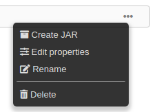

Tutorial
In this tutorial you will see two key features:1. Creating programs
2. Creating REST APIs
Creating programs
Let's create a classic "Hello world" program to have a look at the basic functions.Click on "Blueprints" in the navigation bar to access the catalog where you can manage programs and blueprints.


Right-click on it and select "Edit".

To add more nodes right-click on a blank point of the grid and a selector will appear.
A search field helps to find a specific node. Search "Print String" node and select it.

Blue connectors control the execution flow, while other connectors are for passing data between nodes.
To link two connectors left-click on the first and track the edge onto the second, then release.
Connect nodes as in the picture:

 button on the toolbar.
button on the toolbar.You will see the result in the console.
Let's test the blueprint.
Click on the
 button of the toolbar and then on the "OK" button of the Run dialog.
button of the toolbar and then on the "OK" button of the Run dialog.You should see:
Launching program...
Connected
Getting response...
Successfully executed
Hello world!
Go back to the catalog panel and refresh.The status of the program is now "Compiled". Right-click on the program and select "Create JAR".

Wait until the popup with the spinning wheel disappears and you'll see a download button on the program's row: Click on it and save the JAR file wherever you want.
Open a Linux terminal and move into the directory where the file has been saved.
Execute the JAR:
$ java -jar "New program.jar"
Hello world!
This example has shown how a program can be created using the blueprint editor and exported as an executable JAR.Moreover, the JAR file has all the dependecies inside, so you can run it even on different servers.